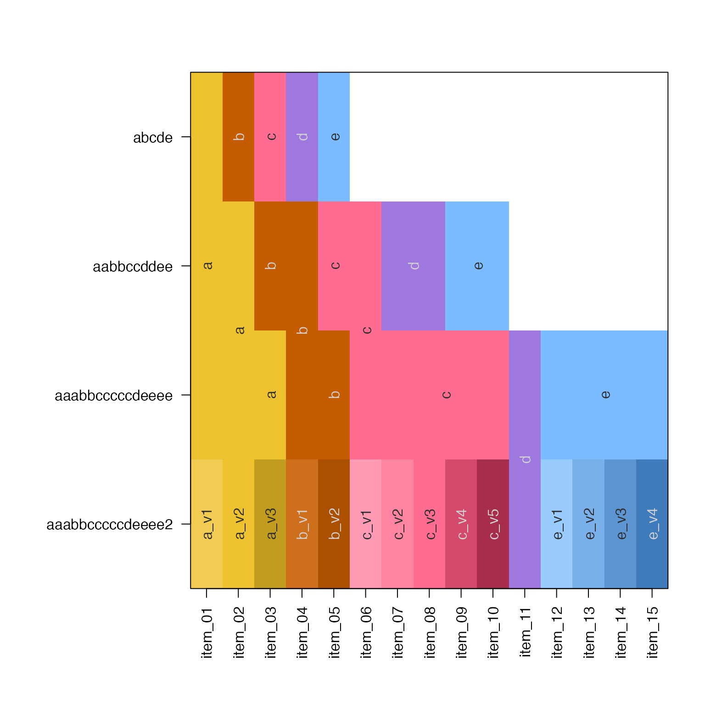

Assign colors to vector of group labels
group2colors(
x,
alpha = 1,
colorFunc = rainbowJam,
colorSub = NULL,
sortFunc = jamba::mixedSort,
useGradient = FALSE,
verbose = FALSE,
...
)character or factor vector representing group membership.
numerical value indicating the alpha transparency to apply to the output colors, scaled from 0 (fully transparent) to 1 (no transparency).
function whose first parameter is the number of
colors to return, and where ... is passed for additional
parameters as needed. By default it uses colorjam::rainbowJam().
optional named vector of colors, whose names must
match all entries in x. This vector is used to re-apply
colors which have already been assigned to the labels in x.
function to use when sorting character or numeric
input in x, by default jamba::mixedSort(). When input x is
a factor, the factor levels are maintained in the same order.
logical indicating whether to apply a light-to-dark gradient to repeated colors, for example to distinguish multiple replicates of a group.
logical indicating whether to print verbose output.
additional parameters are passed to colorFunc
This function takes a character or factor vector as input, then
assigns categorical colors to each label using colorFunc, by
default rainbowJam().
If a previous set of colors has already been defined, the parameter
colorSub is intended to maintain that same set of colors. However,
all input values in x must be present in the names(colorSub)
otherwise all colors are reassigned.
In future, this function will maintain a partial set of colors, while assigning colors with maximum visible differences from the existing colors.
Other colorjam core:
blend_colors(),
closestRcolor(),
closest_named_color(),
color_complement(),
colors_to_df(),
rainbowJam(),
sort_colors(),
subset_colors()
Other colorjam assignment:
col_div_xf(),
col_linear_xf(),
matrix2heatColors(),
rainbowJamMulti(),
vals2colorLevels(),
vibrant_color_by_hue()
abcde <- group2colors(letters[1:5]);
aabbccddee <- group2colors(rep(letters[1:5], each=2));
aaabbcccccdeeee <- group2colors(rep(letters[1:5], c(3,2,5,1,4)));
aaabbcccccdeeee2 <- group2colors(rep(letters[1:5], c(3,2,5,1,4)), useGradient=TRUE);
jamba::showColors(list(abcde=abcde,
aabbccddee=aabbccddee,
aaabbcccccdeeee=aaabbcccccdeeee,
aaabbcccccdeeee2=aaabbcccccdeeee2));
